Start from a template.
Make it yours.
Written by the Scribyra project and free to use for anything. Each one compiles with the packages built into Scribyra, so it works offline after the first compile. Comments in the source explain what to change.
Choosing Open in Scribyra opens the app with that template selected. Nothing is created until you choose Create project, and the project stays in your browser. In the app, the same templates are under New project.
Start here
-
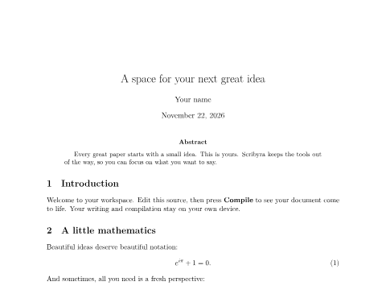
Sample paper
A short article with an abstract, sections and equations. The quickest way to see Scribyra at work.
Open in Scribyra -
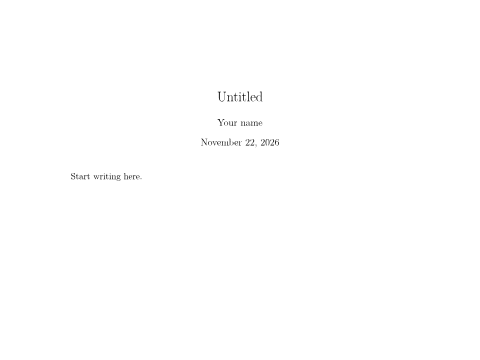
Minimal
A blank page with just enough LaTeX to compile. For when you know what you want.
Open in Scribyra
Papers and reports
-
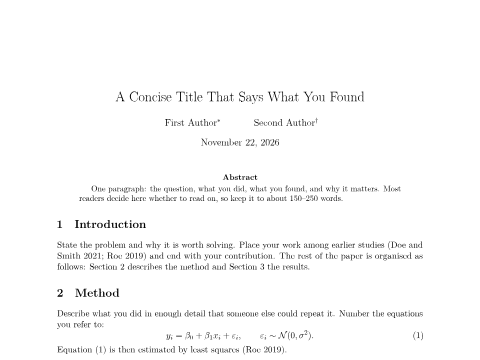
Article
A research paper with abstract, sections, a figure, a table, cross-references and a biblatex bibliography.
Open in Scribyra -
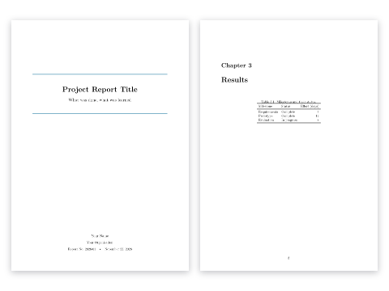
Report
A technical or project report with a title page, contents, chapters, an executive summary and references.
Open in Scribyra
Books and theses
-
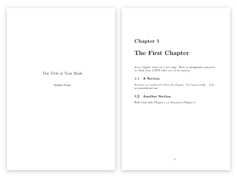
Book
A book with parts, chapters in separate files, front and back matter, a copyright page and a table of contents.
Open in Scribyra -
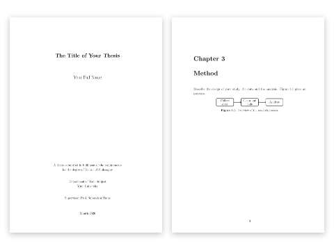
Thesis
A thesis or dissertation: title page, declaration, abstract, contents and lists, chapters in separate files, appendices and a biblatex/Biber bibliography.
Open in Scribyra
Slides and posters
-
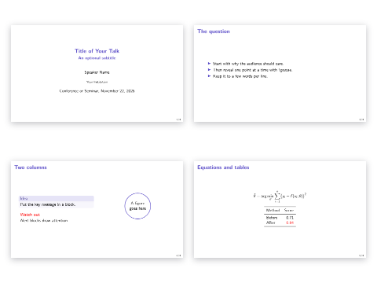
Beamer presentation
Widescreen slides with a title slide, an outline, columns, blocks, step-by-step lists and a references slide.
Open in Scribyra -
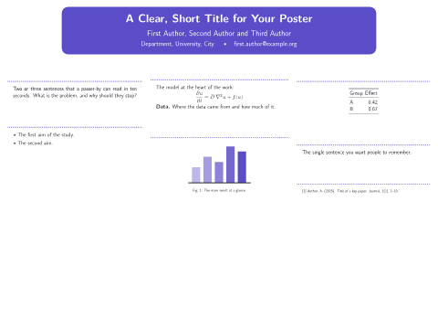
Conference poster
An A0 portrait research poster made with tikzposter: title bar, three columns of blocks, a figure and contact details.
Open in Scribyra
Teaching and coursework
-
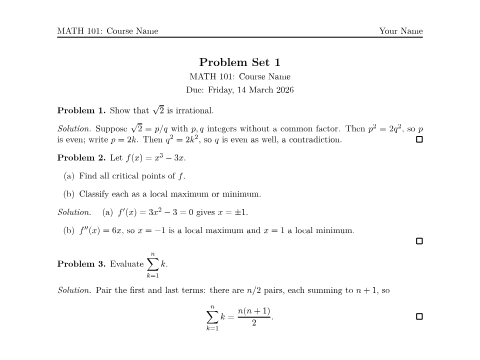
Homework / problem set
Numbered problems with parts and solutions, a course header on every page, and theorem-style environments for proofs.
Open in Scribyra -
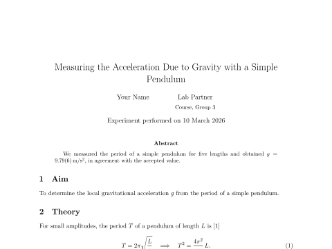
Lab report
A science lab report: aims, theory, apparatus, method, results with units, a plotted data set, error analysis and references.
Open in Scribyra -
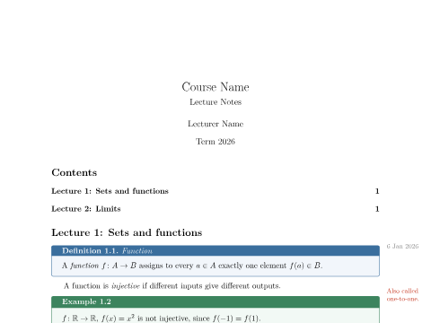
Lecture notes
Course notes with numbered lectures, coloured boxes for definitions, theorems and examples, margin notes and exercises.
Open in Scribyra
Career
-
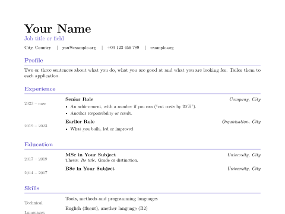
CV / résumé
A clean one- or two-page CV: contact header, profile, experience, education, skills and publications.
Open in Scribyra -
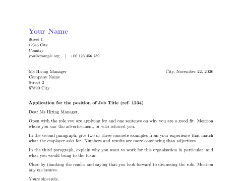
Cover letter
A formal letter with sender and recipient addresses, date, subject line, body and signature. Pairs with the CV template.
Open in Scribyra
Journal and conference classes
Publisher classes such as IEEEtran, acmart, elsarticle or llncs are not bundled yet. They are in the TeX catalog, so a document that uses them downloads the class from a TeX Live mirror the first time it compiles. Use the publisher’s own template, upload it as a ZIP, and compile.